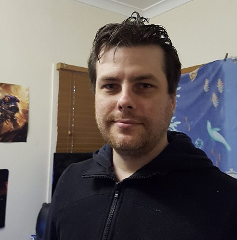

My name is Thomas Harlow, I was born in Adelaide in 1984, my parents are Tom and Margaret Harlow, my dad was born in Brisbane in 1955 and my mum was born in Ireland in 1960 but moved to Australia when she was a kid, so I am Irish/Australian even though I've never visited Ireland unfortunately. My mother's parents were both from Ireland, and my dad's parents were from Scotland and Wales.
I went to primary school in Sydney until my family and I moved to Brisbane at the end of 1995, I then went to Boondall State school until I finished year 7 and at the beginning of 1998 I went to Sandgate high school and finished year 12 in 2002, I never went to Uni, tafe or done any courses until now. During school I did try and learn German but i was only able to learn numbers and some words
I don't have any pets but used to have a german shepherd when I was a kid name Sophie who passed away before we moved from Sydney to Queensland at the end of 1995, during 1996 we got our cat Smokey, then Daisy who was our blue heeler and then Selina, our maltese poodle, all sadly passed away a number of years ago.
I've got several hobbies, I enjoy playing table top Warhammer 40k, I play Magic The Gathering, various board games and many different type of video games with friends, one of my favourite game types are those deceitful games like Trouble in Terrorist town, but I am a terrible liar in those games.
